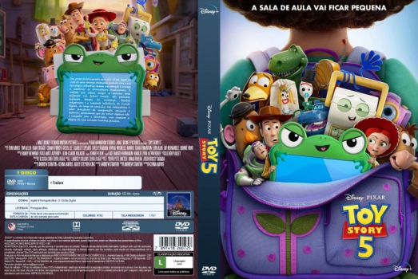

![link to Toy Story 5 [Autorado] on Rotten Tomatoes](../img/tomatoes.png)
![link to Toy Story 5 [Autorado] on TheMovieDb](../img/themoviedb.png)

País:United States, 102 minutos
Idiomas falados:Inglês, Espanhol, Alemão
Gênero(s):Animação, Família, Comédia, Aventura
Diretor(s):Andrew Stanton
Escritor(es):Andrew Stanton, Kenna Harris
Codec:MPEG-2 (DVD)
Número: 5964


Certificado:10
Sinopse:
O quinto filme da franquia Toy Story, dirigido por Andrew Stanton (Procurando Nemo e Vida de Inseto), vai mostrar como os brinquedos lidam com a chegada da tecnologia. Agora com 8 anos de idade, Bonnie descobre um novo passatempo: o tablet. Lilypad (Greta Lee) é um dispositivo que consegue criar mundos virtuais inteiros prendendo a atenção de Bonnie e a fazendo se distanciar dos brinquedos. Jessie (Joan Cusack) tenta manter todos unidos e esperançosos, mas quanto mais tempo Bonnie passa com Lilypad, mais os brinquedos entram em desespero. É nesse contexto que uma importante figura retorna! Woody (Tom Hanks), mais velho e experiente, vai tentar tudo que pode para ajudar todos a conseguirem lidar com essa nova realidade. Buzz Lightyear (Tim Allen), Woody, Jessie e os demais brinquedos seguem uma jornada difícil de aprendizado que revela que a tecnologia e a tradição podem coexistir, mas também acendem um alerta sobre a quantidade de horas que uma criança passa em frente a telas, adaptação e a perda de afeto humano com a chegada do distanciamento causado pelo digital.
Elenco:


Tipo de mídia: DVD5,
Legendas: Português, Sem Legendas
Alugado: Não
Tela: Anamorphic Widescreen